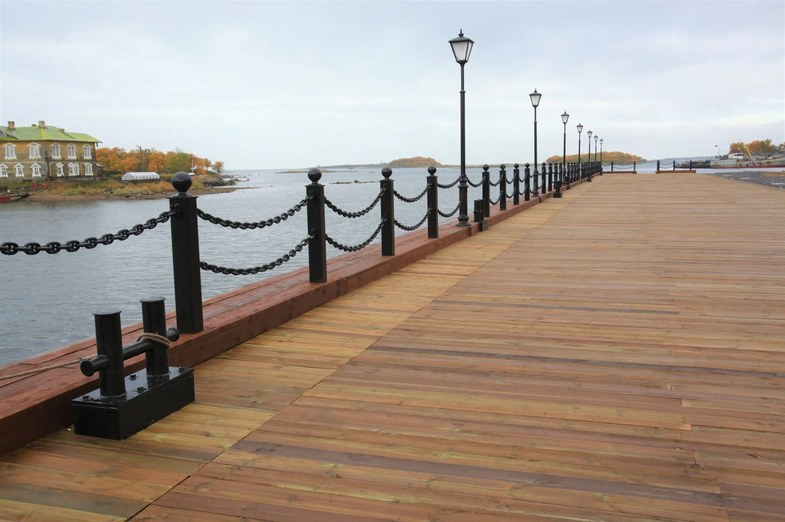

Давайте обсудим объект
Свяжитесь удобным способом или оставьте заявку на коммерческое предложение.

Контакты организации
Телефон+7 (911) 754-88-99
Почтаinfo@gtmonitor.ru
Telegram@smirnovr82
Юридический адрес188692, Ленинградская обл., г. Кудрово, ул. Столичная, д. 4, к. 3